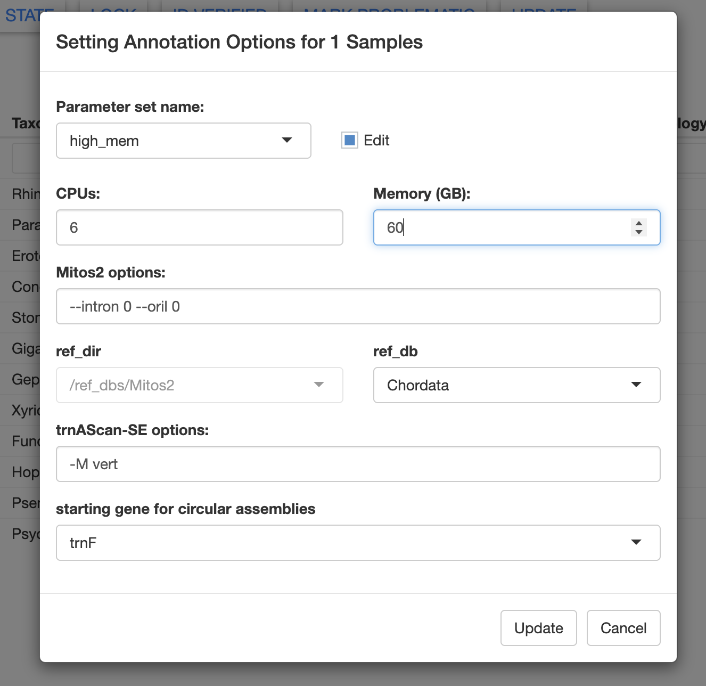
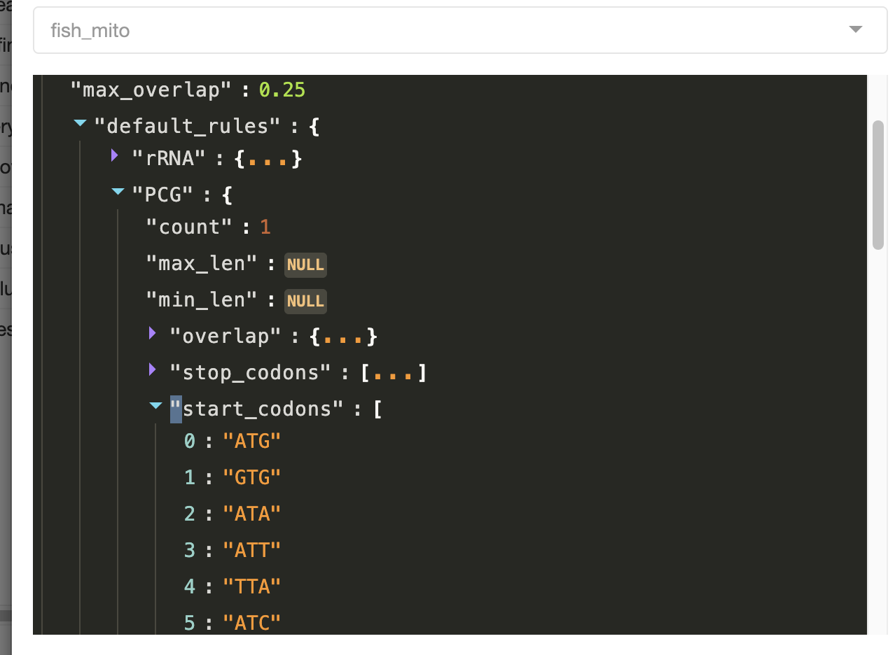
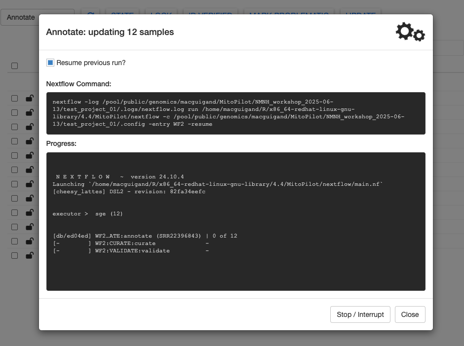
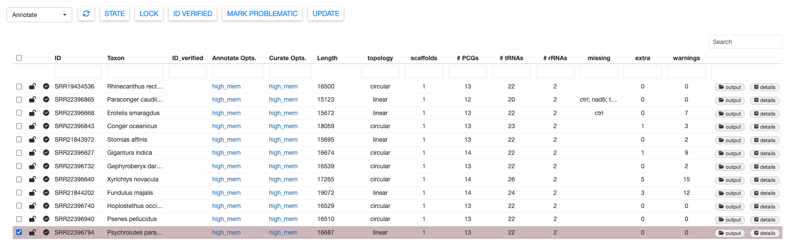
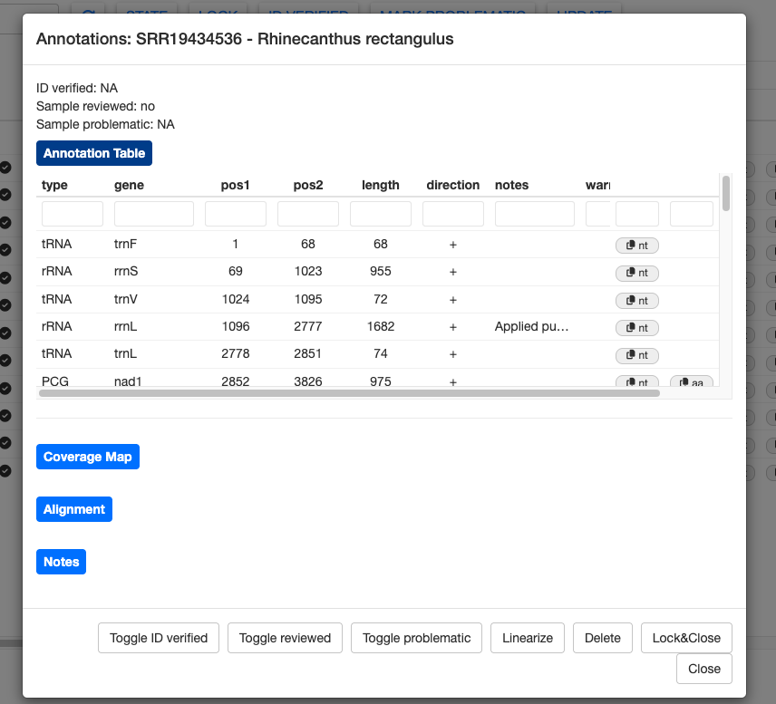
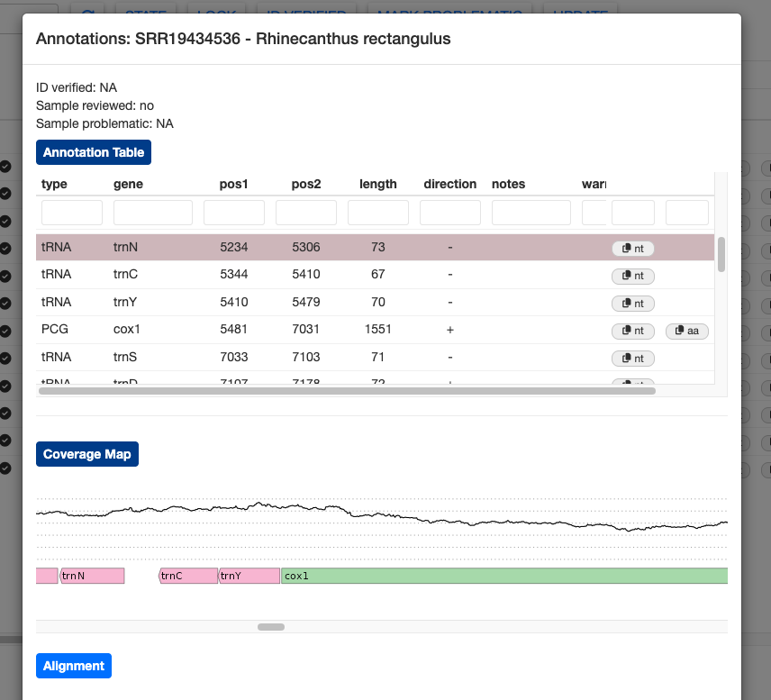
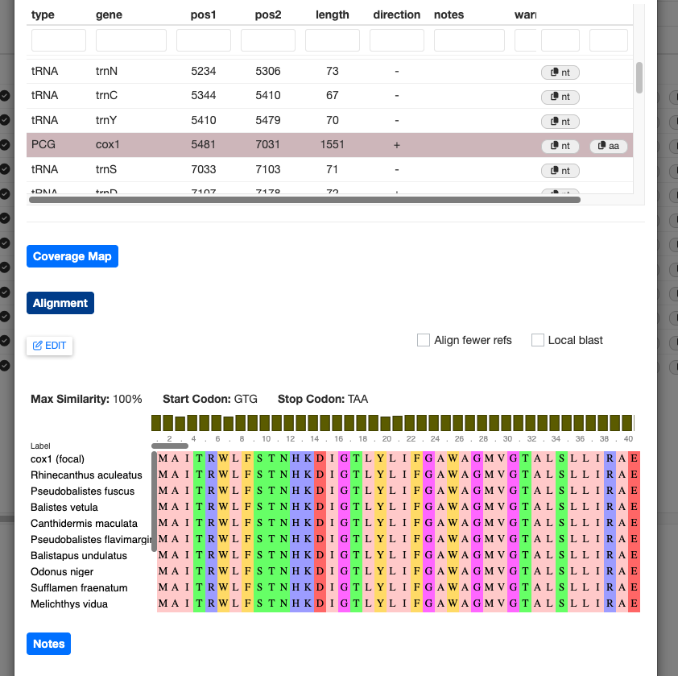
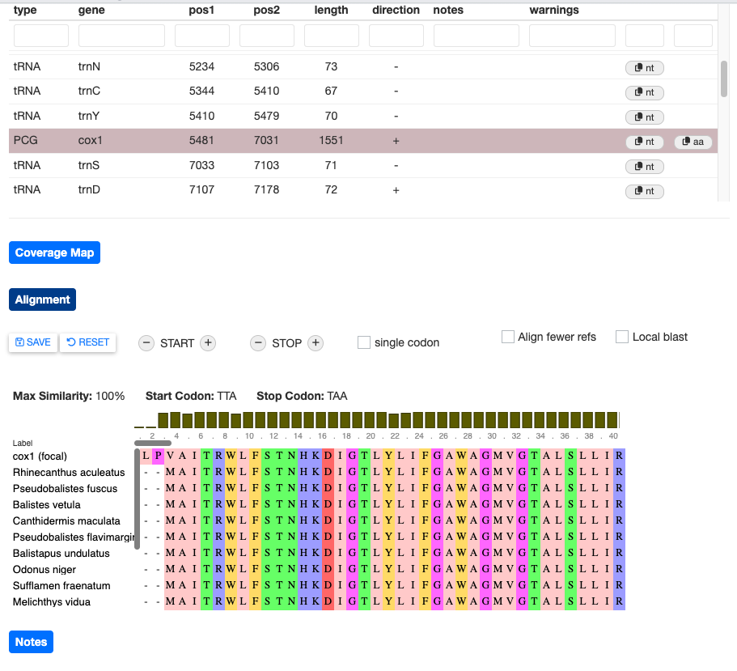
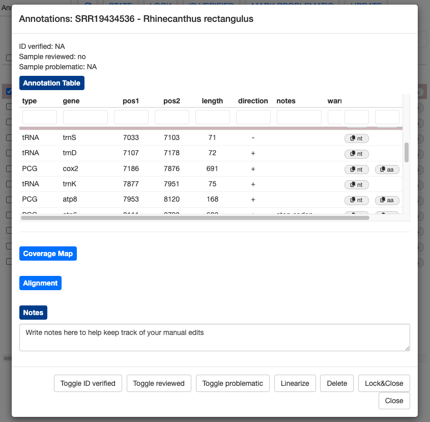

04 - annotation
Running the Annotate Module
We can now move on to the Annotate pipeline module. This module consists of an annotation step using Mitos2 and tRNAscan-SE, a taxon-specific curation step to refine the annotation models, and a validation step to flag possible issues or known errors that would be rejected by NCBI GenBank.
Use the dropdown menu in the top left and select Annotate.
Let’s edit the Annotate Opts and increase the memory allocation to 60 GB. In this window, you could also edit the Mitos2 and tRNAscan-SE options. In the future, we will allow users to specify custom reference databases for annotation.

You can also edit the curation options. For the test dataset, the default fish_mito options are fine, but let’s increase the memory to 24 Gb.
In the curation options window, you can see all of the complex rules that will be applied when MitoPilot performs automatic curation of the annotation results. For example, here are the allowed stop codons for protein-coding genes.

To run the Annotate module, you can use either approach described in the previous Nextflow section. Let’s use the GUI method.

Once all steps are complete, the gears will stop spinning and you’ll see a summary message printed at the bottom of the Progress window. Click Close to return to the sample table.
Exploring Annotation Results
There are a LOT of results to explore from the Annotate module. The sample table reports some basic stats about the number of protein-coding genes (PCGs), tRNAs, and rRNAs. The missing column reports which mitochondrial genes were not annotated (based on the provided curation model). The extra column notes the number of potentially duplicated genes.
Lastly, the warnings column indicates how many warning flags were raised during the validation step. Samples with many warnings will require more manual curation to ensure that they are not rejected upon submission to NCBI GenBank. Warning messages are explained in further detail here.

The annotation results for each sample can be examined more closely by clicking the details button. First, let’s examine the details for a good sample, SRR19434536 (Rhinecanthus rectangulus).

This sample has the expected number of genes and no warnings. However, the notes column shows that MitoPilot still made some tweaks to the annotation during the curation step. For example, the start position of rRNA rrnL was moved 22 bp upstream and the stop codon for NAD2 was trimmed by 2 bp.
Nucleotide sequences (and amino acid sequence for PCGs) can be copied to the clipboard using the nt (and aa) buttons on the far right. This could be helpful if you’d like to manually BLAST some genes.
Clicking on the Coverage Map button will show a plot of sequence depth, zooming to the position of the highlighted gene. The colored bars representing the genes are transparent, allowing you to spot overlapping gene models that may need manual adjustment.

For protein-coding genes, you can click the Alignment button to show the protein alignment of your annotated gene against a reference database. Currently, this shows only the top BLAST hits from the curation process, which may be one or more sequences.

If you would like to use your own custom BLAST database, you can check the Local blast box. MitoPilot will return a message with instructions to run options('MitoPilot.local.db' = '/path/to/local/blastp/db') within your RStudio session. You will need to restart the MitoPilot GUI for this change to take effect.
Editing Annotation Results
MitoPilot offers some basic functions to manually edit your annotation results. Let’s open the alignment for the SRR19434536 (Rhinecanthus rectangulus) “cox1” gene. Clicking the EDIT button brings up a few options to change the start and stop position annotation.
Try clicking the + button next to START. You should see that the “cox1 (focal)” sequence start position has shifted.

This is clearly a worse alignment. Click RESET to undo your changes.
If the alignment view contains many sequences, manual editing will be slow since MitoPilot has to redo the alignment every time you adjust a codon position. To speed this up, you can select the Align fewer refs box. This will restrict the alignment to the top five BLAST hits.
Below the alignment section you will find the Notes. Use this section to keep track of your manual edits. Anything you write here will be saved automatically.

At the bottom of the window are several buttons. You can completely remove annotations by selecting them and clicking Delete. Use this feature with caution, as there’s no easy way to add the annotation back without running the sample through the Annotate module again.
The Linearize button will convert a circular assembly to a linear assembly. This may be useful if the D-loop region was poorly assmebled or annotated.
You can use the Toggle reviewed button to change the state of the Reviewed column, which may be helpful for tracking the progress of your manual edits. Likewise, we have provided Toggle ID verified and Toggle problematic buttons to help track the status of your samples.
Annotation editing can be a bit temperamental and you may encounter bugs. Please report any problems on the MitoPilot GitHub issues page.
Try playing around with the manual editing on your own. There are many different types of warning messages, not all of which can be fixed within MitoPilot.
Warning messages will not disappear, even after you fix the error with manual edits.
Once you are done, select all of the samples and click the LOCK button to prepare for the Export module.